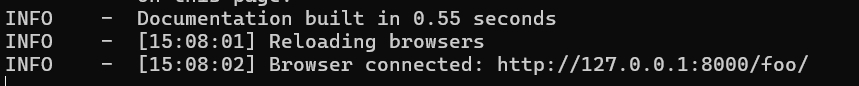

Welcome to MkDocs¶
MkDocs 是一个快速、简单的静态网站生成器，专门为项目文档设计。使用 MkDocs，你可以轻松创建和部署项目文档。
目录¶
简介¶
MkDocs 是一个用于项目文档的静态网站生成器。它使用 Markdown 编写文档，并生成一个可发布的静态网站。
特点¶
- 简洁易用：使用 Markdown 编写文档。
- 自动化生成：一条命令即可生成文档网站。
- 主题丰富：提供多种主题，满足不同需求。
- 插件支持：通过插件扩展功能。
安装¶
你可以使用 pip 安装 MkDocs：
pip install mkdocs
安装完成后，可以通过以下命令验证安装是否成功：
mkdocs --version
快速入门¶
创建一个新的 MkDocs 项目：
mkdocs new my-project
cd my-project
生成并查看文档：
mkdocs serve
这将在本地服务器上运行，并可以在浏览器中访问 http://127.0.0.1:8000/ 查看文档。如图：

基本命令¶
MkDocs 提供了一些常用的命令：
mkdocs new [dir-name]：创建一个新的 MkDocs 项目。mkdocs serve：在本地启动 MkDocs 开发服务器。mkdocs build：构建静态站点文件。mkdocs help：显示 MkDocs 的帮助信息。
项目结构¶
一个典型的 MkDocs 项目结构如下：
my-project/
docs/
index.md
...其他 Markdown 文件
mkdocs.yml
-
'doc/'目录存放所有的 Markdown 文档。 -
'mkdocs.yml'是 MkDocs 的配置文件。
配置文件详解¶
-mkdocs.yml 是 MkDocs 的配置文件，用于定义站点的各项配置：
site_name: My Docs
site_url: https://example.com
theme:
name: material
nav:
- Home: index.md
- About: about.md
plugins:
- search
markdown_extensions:
- toc:
permalink: true
主要配置项:
-
'site_name'站点名称。 -
'site_url'站点 URL。 -
'theme'主题配置。 -
'nav'导航栏配置。 -
'plugins'插件配置。 -
'markdown_extensions'Markdown扩展配置
主题与插件¶
主题¶
MkDocs 支持多种主题，常用主题包括 mkdocs 和 material。可以在 mkdocs.yml 中配置主题：
theme:
name: material
插件¶
插件可以扩展 MkDocs 的功能，例如搜索插件：
plugins:
- search
部署¶
MkDocs 生成的静态文件可以部署到任何静态文件服务器上，例如 GitHub Pages、Netlify、Vercel 等。
部署到 GitHub Pages¶
-
在 GitHub 上创建一个新的仓库。
-
将 MkDocs 站点构建的文件推送到仓库：
mkdocs gh-deploy
这将自动将 site 目录中的文件推送到 gh-pages 分支并部署到 GitHub Pages。
高级用法¶
自定义主题¶
你可以自定义主题，以满足特定需求。创建一个 theme 目录，并在 mkdocs.yml 中配置：
theme:
custom_dir: theme
name: null
使用插件¶
MkDocs 有许多社区插件，可以在 MkDocs 插件目录 找到更多插件。
集成 CI/CD¶
你可以将 MkDocs 与 CI/CD 工具（如 GitHub Actions、Travis CI）集成，实现自动化构建和部署。
常见问题¶
-
如何更改站点的根 URL？¶
在 mkdocs.yml 中配置 site_url：
site_url: https://yourdomain.com
-
如何添加自定义 CSS 和 JavaScript？¶
在 docs 目录中创建 extra.css 和 extra.js 文件，并在 mkdocs.yml 中引用：
extra_css:
- css/extra.css
extra_javascript:
- js/extra.js
-
如何调试 MkDocs 配置？¶
可以使用 mkdocs serve 命令启动本地服务器，在浏览器中查看实时效果，并根据需要修改配置文件。